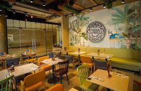

Our Story


Founded in 2018 by Italian chef Marco Benedetti, LovePizza began as a small family restaurant with a simple mission: to bring authentic Italian flavors to every slice. Using recipes passed down through three generations, we combine traditional techniques with the finest locally-sourced ingredients.
Our wood-fired ovens, imported directly from Naples, create the perfect crispy crust that our customers have come to love. Each pizza is hand-stretched and topped with premium ingredients, from San Marzano tomatoes to fresh mozzarella made daily in our kitchen.
Today, LovePizza has grown into a beloved local institution, serving thousands of happy customers while maintaining our commitment to quality, authenticity, and the warm hospitality that Italy is famous for.